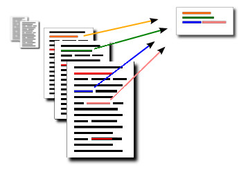

 Abstract: Automatic summarization can help users extract the most important pieces of information from the vast amount of text digitized into electronic form everyday. Central to automatic summarization is the notion of similarity between sentences in text. In this paper we propose the use of continuous vector representations for semantically aware representations of sentences as a basis for measuring similarity. We evaluate different compositions for sentence representation on a standard dataset using the ROUGE evaluation measures. Our experiments show that all evaluated methods improve performance of a state-of-the-art summarization framework and strongly indicate the benefits of continuous word vector representations for automatic summarization.
Fulltext: PDF
Published in: 2nd Workshop on Continuous Vector Space Models and their Compositionality CVSC 2014, Gothenburg Sweden
PhD Student,
Department of Computer Science and Engineering,
Chalmers University of Technology,
41296 Göteborg, Sweden
Visiting: Room 6447, EDIT building, Campus Johanneberg.
Email: last name at chalmers.se.
Telephone: +46-703-969624.